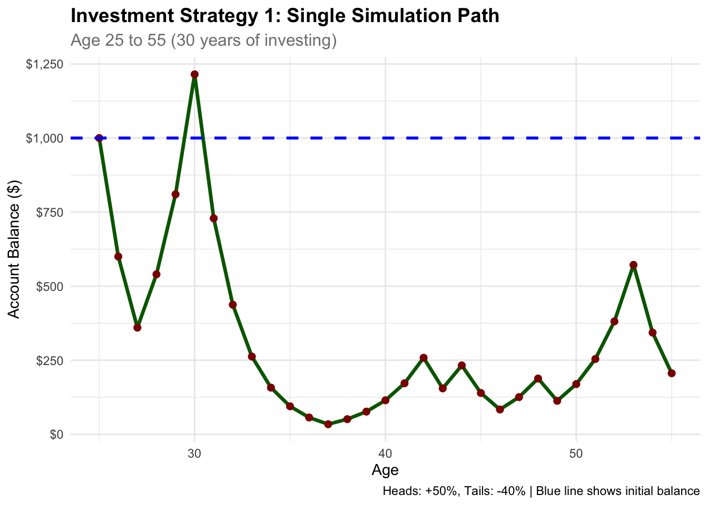
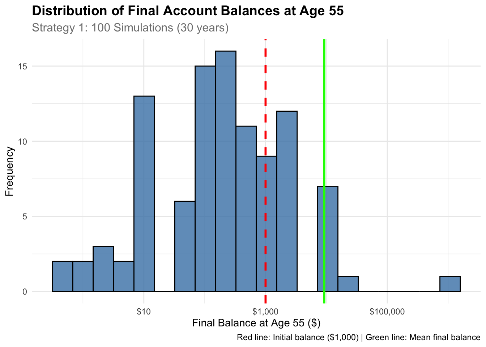
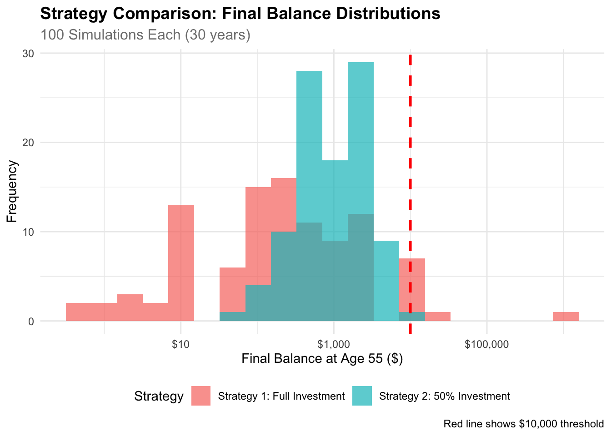

Expected Value Analysis:Initial balance: $ 1000 Balance after heads (50% gain): $ 1500 Balance after tails (40% loss): $ 600 Expected value: $ 1050 Expected return: 5 %Monte Carlo Simulation of Multiplicative Investment Games
This analysis examines two investment strategies using Monte Carlo simulation to understand the long-term behavior of multiplicative investment games. We investigate how expected value calculations can be misleading when applied to real-world investment scenarios with compounding effects.
Consider an investment game where you start with $1,000. Each year, a coin is flipped: - Heads (50% probability): Your entire balance increases by 50% - Tails (50% probability): Your entire balance decreases by 40%
This process continues annually from age 25 to 55 (30 years).
In this modified approach, you must invest exactly 50% of your current balance each year: - Heads (50% probability): Your invested amount increases by 50% - Tails (50% probability): Your invested amount decreases by 40% - The remaining 50% of your balance remains untouched
Let’s first examine the theoretical expected value after one coin flip for Strategy 1:
Expected Value Analysis:Initial balance: $ 1000 Balance after heads (50% gain): $ 1500 Balance after tails (40% loss): $ 600 Expected value: $ 1050 Expected return: 5 %The expected value after one coin flip is $1,050, representing a 5% expected return. This suggests positive expected outcomes. However, as we’ll see, this theoretical calculation can be misleading when applied to long-term multiplicative processes.
Counter-Intuitive Finding: Despite positive expected value, most simulations result in losses due to the multiplicative nature of compounding.
Let’s examine what happens in a single 30-year simulation:

Single Simulation Results:Initial balance (age 25): $ 1000 Final balance (age 55): $ 205.89 Total return: -79.41 %Annualized return: -5.13 %To understand the true risk profile, we run 100 simulations:

Strategy 1 Summary Statistics:# A tibble: 1 × 6
mean_balance median_balance min_balance max_balance prob_above_initial
<dbl> <dbl> <dbl> <dbl> <dbl>
1 9226. 206. 0.337 785412. 0.3
# ℹ 1 more variable: prob_above_10000 <dbl>Strategy 1 Probability Analysis:============================Probability that final balance > $1,000: 0.3 ( 30 %)Probability that final balance > $5,000: 0.09 ( 9 %)Probability that final balance > $10,000: 0.02 ( 2 %)Probability that final balance > $50,000: 0.01 ( 1 %)# A tibble: 4 × 3
threshold probability percentage
<chr> <dbl> <dbl>
1 $1,000 0.3 30
2 $5,000 0.09 9
3 $10,000 0.02 2
4 $50,000 0.01 1Now let’s analyze Strategy 2 (50% betting rule):

| Investment Strategy | Average Final Balance | Median Final Balance | Chance > $1,000 | Chance > $10,000 |
|---|---|---|---|---|
| Strategy 1: Full Investment | $9,226 | $ 206 | 30% | 2% |
| Strategy 2: 50% Investment | $1,402 | $1,000 | 39% | 0% |
Comparison of Strategy 1 vs Strategy 2
## 🎯 **Key Comparison Insights:**• **Capital Preservation**: Strategy 2 is safer (39% vs 30% chance of keeping your $1,000)• **Growth Potential**: Strategy 1 offers higher rewards (2% vs 0% chance of reaching $10,000)• **Risk vs Reward**: Full investment is riskier but has potential for massive gains• **Conservative Approach**: 50% investment strategy prioritizes capital preservation over growthExpected Value Misleading: Despite a positive 5% expected return, most simulations result in losses below the initial investment.
Extreme Volatility: Final balances range from near zero to potentially millions, demonstrating the high-risk nature of multiplicative investment strategies.
Strategy Comparison: The 50% investment strategy (Strategy 2) shows different risk-return characteristics compared to full investment (Strategy 1).
Key Insight: Strategy 2 is safer for preserving capital but offers no chance of high returns.
This analysis demonstrates several critical concepts:
This Monte Carlo analysis reveals the counter-intuitive nature of multiplicative investment processes. While theoretical expected value calculations suggest positive returns, the reality of compounding effects leads to extreme outcomes with high downside risk. Understanding these dynamics is essential for making informed investment decisions and implementing appropriate risk management strategies.
The comparison between full investment and partial investment strategies demonstrates how position sizing can significantly impact risk-return profiles, highlighting the importance of strategic portfolio management in real-world investment scenarios.
Key Takeaway: Expected value alone is insufficient for investment decisions - understanding the full distribution of outcomes is crucial for risk management.